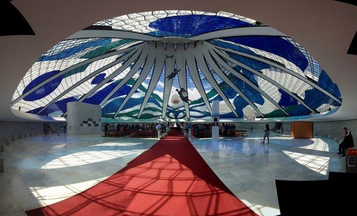
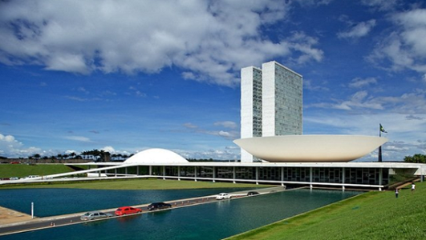
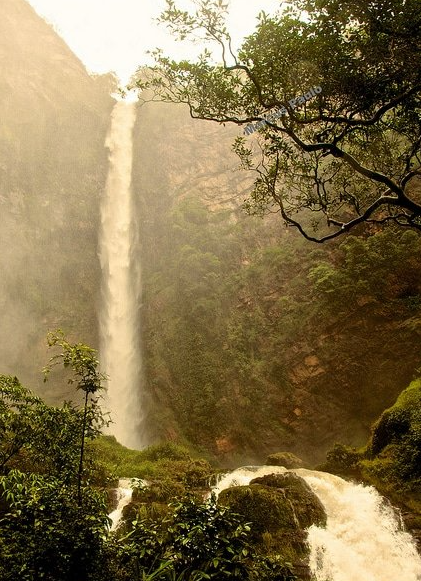

| Accueil | Nos voyages | Notre coup de coeur | Qui sommes nous? |
|---|
Brasilia est la capitale fédérale du Brésil où réside un peu moins de 3 000 000 habitants et est un point de passage obligatoire pour quelconque tourisme voyageant au Brésil. Connue notamment pour la chaleur qui y reigne avec une moyenne de 22 degrès à l'année et des températures n'allant pas en dessous de 13 degrès au plus froid, nous allons vous donner des raisons plus culturelles de vous y rendre. Voici une sélection de 3 lieux incontournables de cette belle mégalopole moderne à visiter.
Cette cathédrale moderne est impressionnante : 16 colonnes incurvées en béton pesant 90 tonnes chacune composent la structure de l’édifice. Cette dernière est hyperboloïde, où la robustesse et la décoration vont main dans la main. L’architecture ressemble aux autres projets de Niemeyer, élégante et simple, mais diffère des bâtiments religieux avec ses magnifiques panneaux de verre bleu-vert.
Le Congresso Nacional do Brazil est composé de plusieurs bâtiments, caractérisés par les tours jumelles (les tours des bureaux du Parlement), le bâtiment du Sénat en forme de dôme et la chambre des députés en forme de bol. L’ensemble architectural est situé sur l’axe principal de la ville (comme on peut le voir depuis la Tour TV). Les tours jumelles sont volontairement décalées sur la gauche pour donner un peu de dynamisme à ce plan de ville méticuleux.
La cascade d’Itiquira se trouve à un peu plus de 100 km de la capitale. Haute de 168 mètres, c’est la deuxième plus grande au Brésil. Les lieux sont protégés contre le développement et offrent donc une beauté naturelle exceptionnelle.
